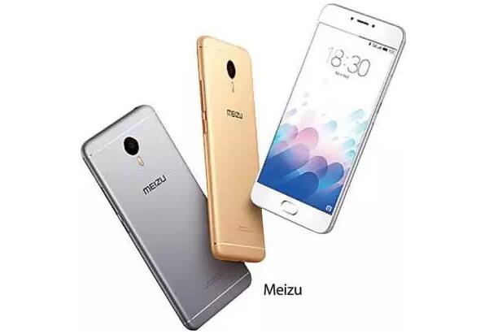

Many Brand of mobile phonesare avariable today. Every leading mobile phone brand has a good recognition by the avan-garde function in the mobile gadgets. Thiis is worthwhiel to take enough time to listen to the following details about to 10 phones 2014 to buy the most expected featturesof the mobile gadget.

Sri lankan youth now is opeining this amazing and innovative smart phone experience. The unique design of Meizuphone, competitive price, exclusive Android software(flyme) stable and smooth running, wihich are making Meizubecome one of the most popularmobile phone brandsamong young people in Sri Lank. Meizu CEO of Sri Lanka market said as a prestigious mobile phone brand in China,Mizu will provide a cost-effective, high-quality innovative smartphone to Sri Lanka consumers.
The Sri lanka Smart Phone's Market
Sri Lanka's economy grows very fast in recent years. The annual ceonomic growth rate is around 8% from 2010.The gross domestic value is about 78 billion dollars in the year of 2015, which reflects a steady growth of the economy.